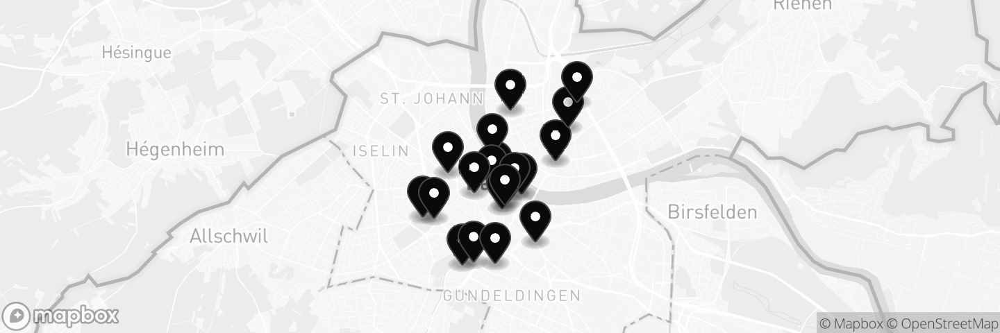
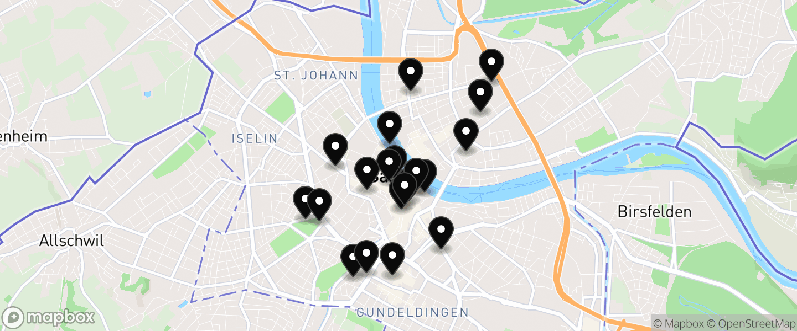
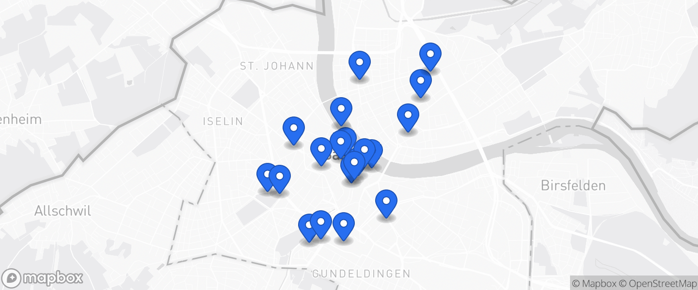
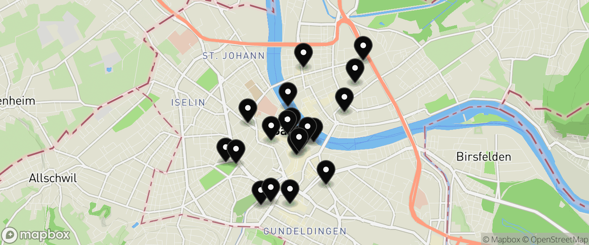

Same real Basel map and the same 20 real pins, four map styles. The grey one is the current look you did not like; the others bring the map to life (the Rhine reads blue, parks green) while staying calm enough for the homepage.

20 Salons in Basel Karte öffnenThe grey one. Reads flat / wireframe-ish, which is the "monochrome" you flagged.

20 Salons in Basel Karte öffnenReal map colour. The Rhine, the parks and the roads carry the colour , the way a normal city map looks. Ink pins stay legible. Most alive, still calm.

20 Salons in Basel Karte öffnenMinimal colour. Keeps the quiet grey base, colour comes only from the brand-blue pins. Least busy, but the map itself is still fairly grey.

20 Salons in Basel Karte öffnenGreener. Terrain style, more green. Warmer but a bit busier and less "city" than option 1.
All four are the real api.mapbox.com map of Basel with the 20 real salon pins, only the style / pin colour changes. Self-hosted, no CDN.